Ilustracije na kartama
Brevijar, II. ljubljanski (II. beramski), II. dio
Breviarium glagoliticum, vol. II, 15. st. (NUK, Ms 163)
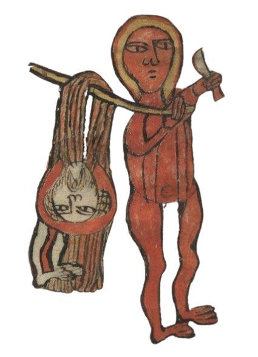
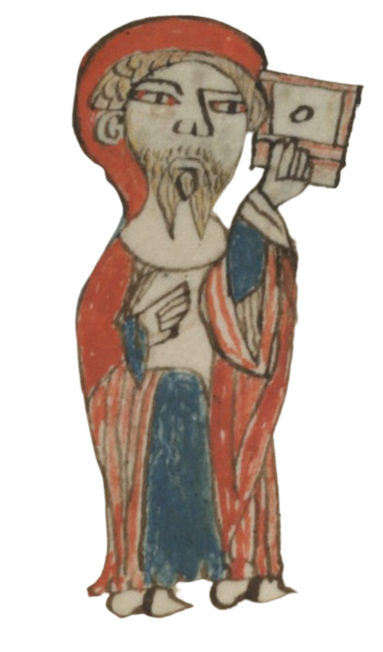
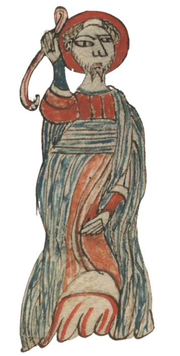
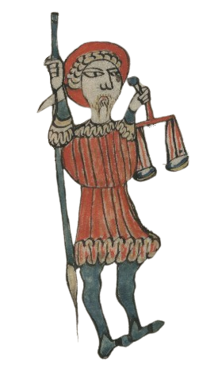
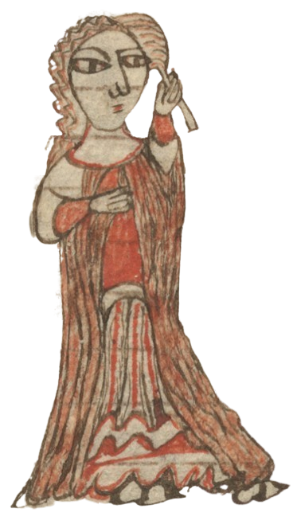
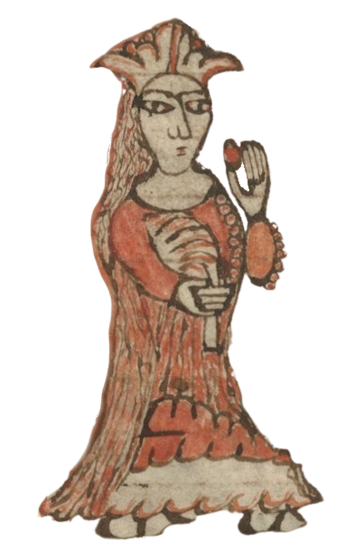
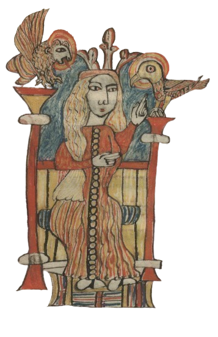
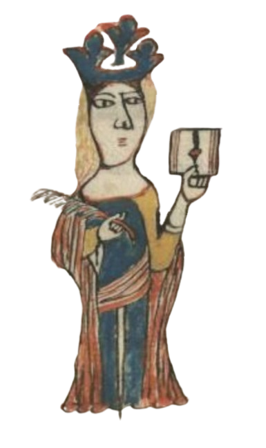
Brevijar, I. ljubljanski (I. beramski)
Officium sanctorum glagolitice, kraj 14. st. (NUK, Ms 161)
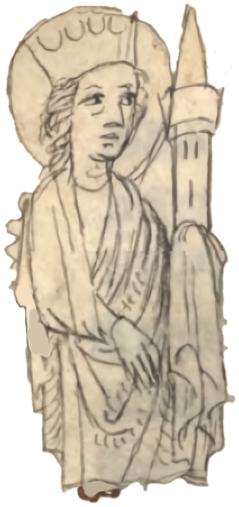
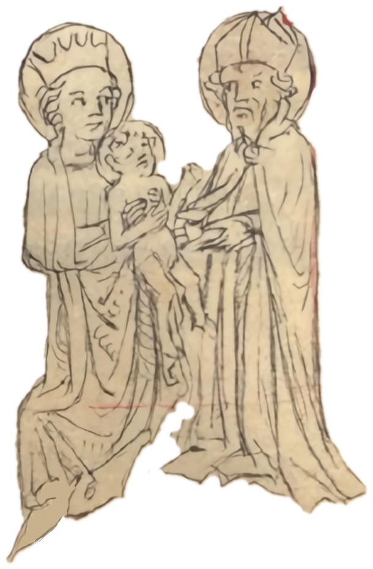
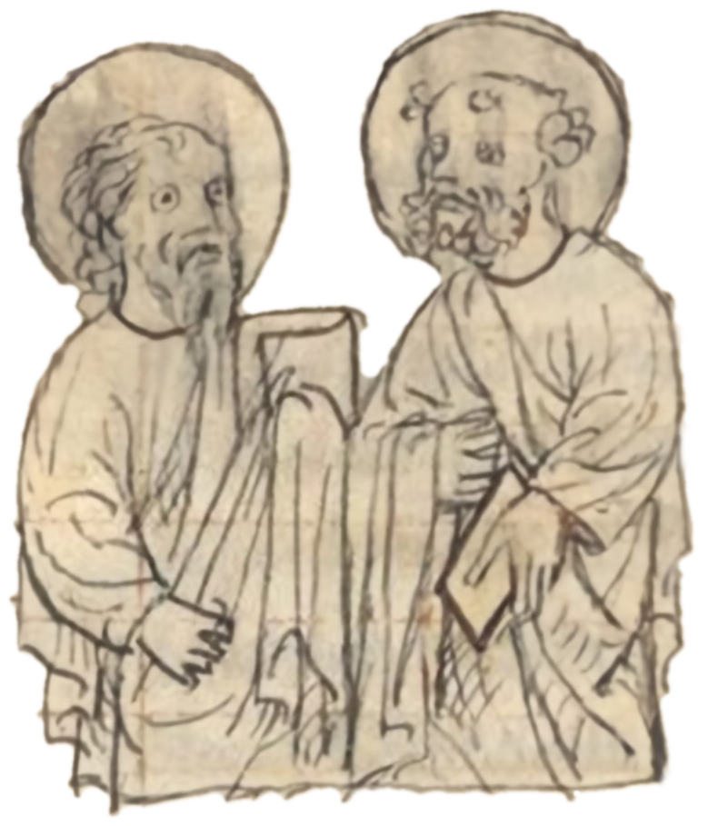
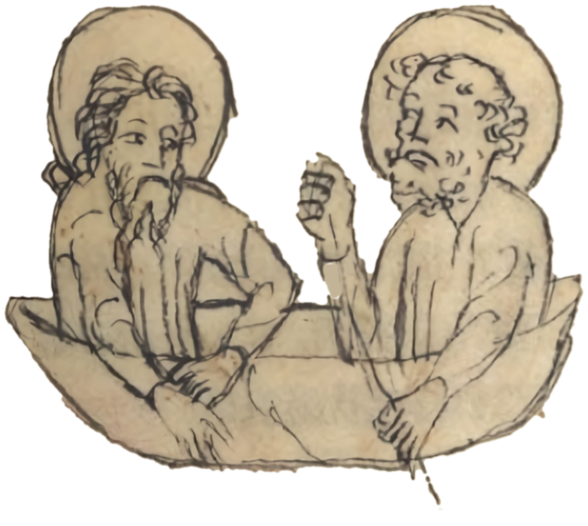
Misal, I. ljubljanski (I. beramski)
Missale Romanum glagoliticum, 15. st. (NUK, Ms 162, stara sign.: II C 162a/2)
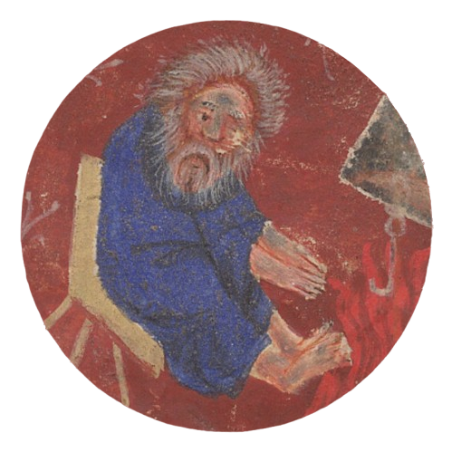
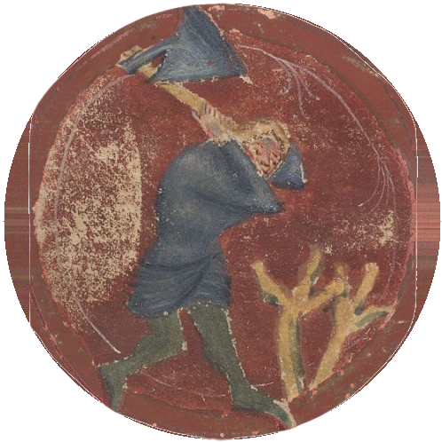
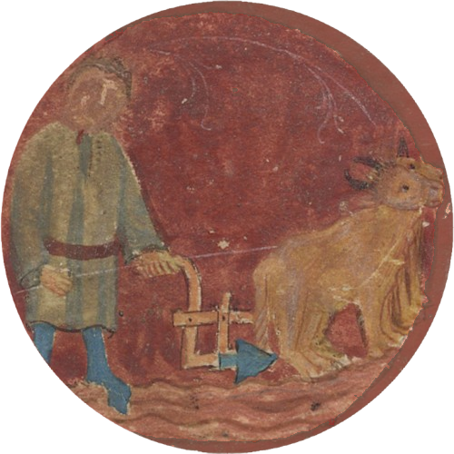
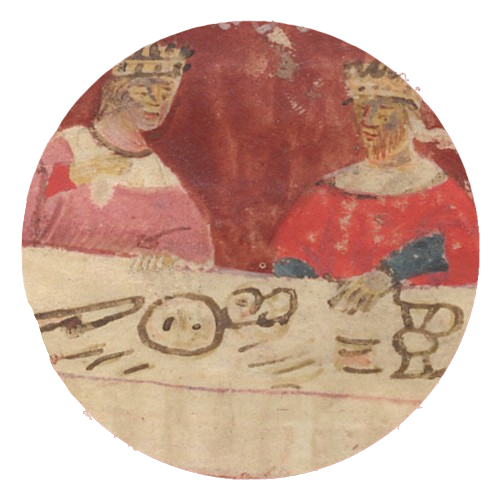
O izradi igre
Igra je izrađena na temelju projekta PESolitaire,
koji je napisao, dizajnirao i održava PicturElements.
Rad je dopušteno poboljšavati, mijenjati i dijeliti na bilo koji način, u skladu s uvjetima MIT licence.
Poželjno je navesti autorstvo. Više informacija može se pronaći ovdje.
Kod i dizajn igre doradio je Josip Mihaljević.
Igra je izrađena unutar projekta Razvoj modela digitalne infrastrukture Staroslavenskoga instituta (DigiSTIN).
Ilustracije
Ilustracije na kartama preuzete su iz sljedećih rukopisa:
Brevijar, II. ljubljanski (II. beramski), II. dio
Brevijar, I. ljubljanski (I. beramski)
Misal, I. ljubljanski (I. beramski)
Napomena o pravima: vlasnička prava i prava reprodukcije na digitalnim snimkama iz kojih su
ilustracije preuzete pripadaju ustanovi Narodna in univerzitetna knjižnica (NUK), Ljubljana.
PESolitaire v1.0 - Licenca
MIT
Copyright 2017 PicturElements
Ovime se besplatno daje dopuštenje svakoj osobi koja dođe u posjed primjerka ovog softvera i
pripadajućih dokumentacijskih datoteka ("Softver") da raspolaže Softverom bez ograničenja,
uključujući bez ograničenja prava na korištenje, kopiranje, mijenjanje, spajanje, objavljivanje,
distribuiranje, podlicenciranje i/ili prodaju primjeraka Softvera, te da to dopusti osobama kojima je
Softver ustupljen, uz sljedeće uvjete:
Gore navedena obavijest o autorskim pravima i ova obavijest o dopuštenju moraju biti uključene u sve
primjerke ili znatne dijelove Softvera.
SOFTVER SE PRUŽA "KAKAV JEST", BEZ IKAKVOG JAMSTVA, IZRIČITOG ILI PREŠUTNOG, UKLJUČUJUĆI, ALI NE
OGRANIČAVAJUĆI SE NA JAMSTVA O UTRŽIVOSTI, PRIKLADNOSTI ZA ODREĐENU SVRHU I NEPOVREDIVOSTI PRAVA. NI U
KOJEM SLUČAJU AUTORI ILI NOSITELJI AUTORSKIH PRAVA NEĆE BITI ODGOVORNI ZA BILO KAKVE ZAHTJEVE, ŠTETE ILI
DRUGE OBVEZE, BILO U POSTUPKU PO UGOVORU, DELIKTU ILI INAČE, KOJE PROIZLAZE IZ ILI SU U VEZI SA SOFTVEROM
ILI KORIŠTENJEM ILI DRUGIM POSTUPANJEM SA SOFTVEROM.